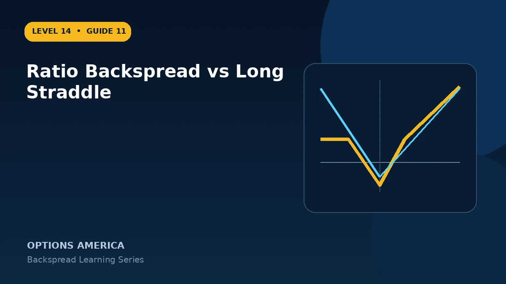

Compare an asymmetric directional backspread with a two-sided long straddle across cost, volatility, movement and loss zones.
Directional reach
A call backspread emphasizes a large rally and a put backspread emphasizes a large decline. A long straddle buys one call and one put at the same strike and can profit from a large move in either direction.
Cost
A backspread may open near zero cost or for a credit because of the short option. A long straddle normally requires a substantial debit and loses that debit if movement is insufficient.
Loss shape
The straddle's worst expiration outcome is at its strike. The backspread can retain a credit on the quiet side yet suffer its largest loss after a moderate move into the long-option strike.
Volatility and events
Both are commonly positive gamma and vega, but exposure sizes differ. Compare event-implied move, skew and the directionality of the forecast rather than choosing by debit alone.
A practical example
Before earnings, a long straddle costs $9 and needs a large move either way. A call backspread costs near zero but only benefits meaningfully from a sufficiently large upside gap.
This simplified example focuses on selected expiration outcomes; live prices and risks will differ. Live option prices also reflect the underlying price, time decay, rates, dividends, liquidity and transaction costs. Greeks are theoretical estimates, not guarantees.
Turn the payoff into a trading plan
Before entering ratio backspread vs long straddle, write down the stock price, both strikes, expiration, contract ratio and total opening credit or debit. Then calculate the quiet-side result, maximum loss at the long-option strike and the far-move breakeven. These three checkpoints make the position easier to monitor and help prevent the attractive tail payoff from hiding the loss valley.
Test at least five scenarios: no move, a move to the short strike, a move to the long strike, a move to breakeven and a move well beyond breakeven. Repeat the exercise with implied volatility higher and lower and with less time remaining. The resulting range is more useful than a single payoff line because a live backspread can change substantially before expiration.
Finally, define the catalyst, maximum acceptable loss, review date and closing method in advance. Use one multi-leg order whenever possible, confirm every fill and recalculate the remaining position before changing any leg. Assignment, liquidity and transaction costs belong in the plan even when the expiration loss appears defined.
Frequently asked questions
Which benefits from both directions?
The long straddle.
Which can open for credit?
A backspread sometimes can.
Do both have positive vega?
They often do, but exact net vega varies.
Continue the Backspread Strategies cluster
Explore related guides: Backspread Greeks: Delta, Gamma, Theta and Vega · Backspread Options Strategy: 12 Mistakes to Avoid · Ratio Backspread Profit, Loss and Breakevens. For a structured sequence, use the free Level 14 – Backspread course.
Options involve risk and are not suitable for every investor. This material is educational and is not investment, tax or legal advice. Greeks are theoretical estimates, and contract terms and broker requirements can vary.